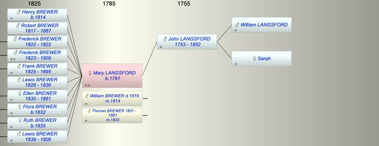

| [Index] |
| Mary LANGSFORD (1791 - ) |
|  |
| b. 1791 at Exminster |
| m. (1) 22 May 1814 William Solomon BREWER ( - 1819) at Exminster |
| m. (2) 04 Feb 1823 Thomas BREWER (1801 - 1861) at Alphington |
| Near Relatives of Mary LANGSFORD (1791 - ) | ||||||
| Relationship | Person | Born | Birth Place | Died | Death Place | Age |
| Grandfather | William LANGSFORD | |||||
| Grandmother | Sarah | |||||
| Father in Law | James BREWER | |||||
| Mother in Law | Elizabeth | |||||
| Father in Law | William BREWER | 1779 | 1827 | Exminster | 48 | |
| Mother in Law | Anna Maria ADAMS | 1781 | Heavitree | 10 Aug 1840 | Heavitree | 59 |
| Father | John LANGSFORD | 1753 | Shillingford St George | 1852 | Exminster | 99 |
| Self | Mary LANGSFORD | 1791 | Exminster | |||
| Husband | William Solomon BREWER | 14 Mar 1819 | Exminster | |||
| Husband | Thomas BREWER | 1801 | Heavitree | 07 Jan 1861 | 60 | |
| Son | Henry BREWER | 25 Mar 1814 | ||||
| Son | Robert BREWER | 03 Nov 1817 | 1887 | 70 | ||
| Son | Frederick BREWER | 16 Sep 1822 | Exminster | 1822 | Exminster | 0 |
| Son | Frederck BREWER | 16 Sep 1823 | Exminster | 1909 | Croydon | 86 |
| Son | Frank BREWER | 22 Nov 1825 | Exminster | 04 Nov 1895 | Kingston On Thames | 69 |
| Son | Lewis BREWER | 13 Mar 1828 | Exminster | 1836 | Exminster | 8 |
| Daughter | Ellen BREWER | 20 Apr 1830 | Exminster | 02 Apr 1861 | 30 | |
| Daughter | Flora BREWER | 15 Dec 1832 | Exminster | Y | ||
| Daughter | Ruth BREWER | 23 Apr 1835 | Exminster | Y | ||
| Son | Lewis BREWER | 1839 | Exminster | 31 Mar 1906 | Redbridge, Hampshire | 67 |
| Half Sister | Ann LANGSFORD | 1784 | Exminster | |||
| Half Brother | John LANGSFORD | 1788 | Shiilingford St George | |||
| Half Brother | WIlliam LANGSFORD | 1788 | Alphington Exeter | |||
| Half Brother | Thomas LANGSFORD | 1794 | Exminster | 1876 | Alphngton | 82 |
| Daughter in Law | Elizabeth BERRY | |||||
| Daughter in Law | Mary HEATH | 1873 | Lewisham | |||
| Daughter in Law | Elvina KEABLE | 1848 | LIketshall, Suffolk | 1904 | Chertsey, Surrey | 56 |
| Daughter in Law | Elizabeth HENSOM | |||||
| Son in Law | Richard BULLEN | 1828 | 1899 | 71 | ||
| Son in Law | John Perry HAYWARD | 1831 | Topsham | Y | ||
| Son in Law | William HEATH | 1824 | Teignmouth | Y | ||
| Daughter in Law | Mary A PHILLIPS | |||||
| Grandson | Living or Recently Deceased | |||||
| Grandson | Living or Recently Deceased | |||||
| Granddaughter | Annie Hesom BREWER | |||||
| Granddaughter | Julia BREWER | 1849 | Exminster | Y | ||
| Grandson | Warwick BREWER | 1853 | 1872 | 19 | ||
| Grandson | Gilbert Devon BREWER | 08 May 1855 | 03 Jun 1893 | Greenhythe | 38 | |
| Granddaughter | Eva L BREWER | 1858 | Y | |||
| Grandson | ArthurLewis BULLEN | 1859 | Clapton Middx | 1932 | Boulder Australia | 73 |
| Grandson | Richard H BULLEN | 1863 | Clapton, Middx | Y | ||
| Granddaughter | Flora BULLEN | 1870 | Clapton, Middx | Y | ||
| Granddaughter | Mary L HAYWARD | 1857 | Topsham | Y | ||
| Grandson | Thomas J P HAYWARD | 1859 | Topsham | Y | ||
| Grandson | Augustus HEATH | 1856 | Deptford | Y | ||
| Grandson | Thomas Brewer HEATH | 13 Jan 1858 | Deptford | Y | ||
| Granddaughter | Mary HEATH | 1865 | Deptford | Y | ||
| Grandson | William HEATH | 1872 | Deptford | Y | ||
| Granddaughter | Maud HEATH | 1876 | Lewisham | Y | ||
| Granddaughter | Living or Recently Deceased | |||||
| Granddaughter | Minnie Amelia BREWER | 1866 | Y | |||
| Niece | Ann LANGSFORD | |||||
| Nephew | William LANGSFORD | |||||
| Niece | Ann Maria LANGSFORD | 1824 | Alphington | 1900 | Croydon | 76 |
| Nephew | Edward BREWER | 03 Feb 1837 | 20 Jun 1868 | Alphington | 31 | |
| Niece | Ann BREWER | 03 Jan 1839 | Alphington | 25 Nov 1841 | Alphington | 2 |
| Nephew | James BREWER | 23 Oct 1842 | Alphington | 1885 | Alphington | 43 |
| Niece | Amelia BREWER | 27 Oct 1846 | 05 Nov 1871 | 25 | ||
| Nephew | Samuel BREWER | 1848 | Alphington | 1901 | Alphington | 53 |
| Niece | Charlotte BREWER | 26 Jul 1851 | Alphington | 1940 | Pinhoe | 89 |
| Niece | Jane BREWER | 03 Dec 1854 | Alphington | Y | ||
| Nephew | William BREWER | 03 Dec 1854 | Alphington | 07 Aug 1912 | 57 | |
| Niece | Francis BREWER | 1835 | Exminster | Y | ||
| Niece | Charles BREWER | 30 Apr 1841 | Exminster | |||
| Niece | Ann BREWER | 1844 | Alphington | Y | ||
| Nephew | Henry BREWER | 1846 | Alphington | Y | ||
| Niece | Rebecca BREWER | 1849 | Alphington | Y | ||
| Nephew | Andrew BREWER | 07 Jun 1850 | Alphington | 02 Jul 1931 | 81 | |
| Nephew | Samulel Watts BREWER | 29 Oct 1837 | Exminster | 1915 | 78 | |
| Niece | Patience BREWER | 1840 | Starcross | 1871 | 31 | |
| Niece | Harriet Watts BREWER | 1842 | Starcross | Y | ||
| Nephew | George BREWER | 1843 | Starcross | 1875 | 32 | |
| Niece | Mary Jane BREWER | 1845 | Starcross | 1845 | Starcross | 0 |
| Nephew | Albert BREWER | 1848 | Starcross | 1848 | Starcross | 0 |
| Niece | Ruth BREWER | 10 Dec 1849 | Starcross | 31 Mar 1921 | Newton Abbott | 71 |
| Nephew | Charles BREWER | 1851 | Starcross | |||
| Nephew | Daniel BREWER | 29 Mar 1853 | Teignmouth | |||
| Nephew | Solomon BREWER | 1855 | Teignmouth | |||
| Nephew | William Henry BREWER | 1857 | Teignmouth | |||
| Niece | Bertha BREWER | 1859 | Teignmouth | 06 Apr 1899 | Teignmouth | 40 |
| Niece | Blanche BREWER | 30 Jul 1860 | Teignmouth | 1916 | Australia | 56 |
| Niece | Alice LORAM | 1842 | Alphington | Y | ||
| Niece | Sarah LORAM | 1844 | Alphington | Y | ||
| Nephew | Thomas LORAM | 1845 | Alphington | Y | ||
| Nephew | William LORAM | 1846 | Alphington | 1891 | Alphington | 45 |
| Niece | Jane LORAM | 1848 | Alphington | 11 Nov 1906 | Alphington | 58 |
| Niece | Mary DAWE | |||||
| Nephew | Thomas DAWE | 1842 | Exeter | |||
| Nephew | John DAWE | 1844 | Exeter | |||
| Nephew | Henry DAWE | 1846 | Exeter | |||
| Nephew | Frank DAWE | 1848 | Exeter | |||
| Niece | Susan DAWE | 1850 | Broadclyst | |||
| Niece | Isaac DAWE | 1853 | Broadcylst | |||
| Niece | Anne DAWE | 1854 | Broadclyst | |||
| Nephew | William Henry REEVE | 1837 | Heavitree | 1917 | 80 | |
| Niece | Elizabeth REEVE | 1839 | Heavitree/Wonford, Devon | 25 Jun 1911 | Bath | 72 |
| Niece | Alice Sarah HURLEY | 13 Nov 1853 | Alphington | 1939 | 86 | |
| Nephew | Alfred Robert HURLEY | 14 Aug 1859 | Alphington | 1935 | 76 | |
| Sister in Law | Anna Maria BREWER | 06 Dec 1803 | Heavitree | 1888 | Lambeth | 85 |
| Brother in Law | William BREWER | 23 Jul 1806 | Heavitree | 23 Aug 1851 | 45 | |
| Brother in Law | James BREWER | 1807 | Exminster | 11 Apr 1881 | 4 Victoria Cottages, Parr St Exeter | 74 |
| Brother in Law | John C BREWER | 14 Jul 1811 | Exminster | 1889 | Petersfield | 78 |
| Brother in Law | Charles BREWER | 18 Mar 1813 | Exminster | 1894 | 81 | |
| Sister in Law | Sarah BREWER | 1815 | Exmouth? | 12 Mar 1852 | Alphington | 37 |
| Sister in Law | Mary BREWER | 1817 | Exminster | 31 Dec 1861 | 44 | |
| Sister in Law | Selina BREWER | 1818 | Exminster | 1899 | 81 | |
| Sister in Law | Charlotte BREWER | 19 Aug 1820 | Exminster | 29 Oct 1883 | 63 | |
| Brother in Law | Hugh UNDERHILL | |||||
| Events in Mary LANGSFORD (1791 - )'s life | |||||
| Date | Age | Event | Place | Notes | Src |
| 1791 | Mary LANGSFORD was born | Exminster | Note 1 | ||
| 25 Mar 1814 | 23 | Birth of son Henry BREWER | |||
| 22 May 1814 | 23 | Married William Solomon BREWER | Exminster | Note 2 | |
| 03 Nov 1817 | 26 | Birth of son Robert BREWER | |||
| 14 Mar 1819 | 28 | Death of husband William Solomon BREWER | Exminster | Note 3 | |
| 1822 | 31 | Death of son Frederick BREWER | Exminster | ||
| 16 Sep 1822 | 31 | Birth of son Frederick BREWER | Exminster | ||
| 04 Feb 1823 | 32 | Married Thomas BREWER (aged 22) | Alphington | Note 4 | |
| 16 Sep 1823 | 32 | Birth of son Frederck BREWER | Exminster | ||
| 22 Nov 1825 | 34 | Birth of son Frank BREWER | Exminster | ||
| 13 Mar 1828 | 37 | Birth of son Lewis BREWER | Exminster | baptised Exminster 31 Mar 1828 | |
| 20 Apr 1830 | 39 | Birth of daughter Ellen BREWER | Exminster | ||
| 15 Dec 1832 | 41 | Birth of daughter Flora BREWER | Exminster | baptised 18 Dec 1832 Exminster | |
| 23 Apr 1835 | 44 | Birth of daughter Ruth BREWER | Exminster | ||
| 1836 | 45 | Death of son Lewis BREWER (aged 8) | Exminster | ||
| 1839 | 48 | Birth of son Lewis BREWER | Exminster | ||
| 1852 | 61 | Death of father John LANGSFORD (aged 99) | Exminster | Note 5 | |
| 07 Jan 1861 | 70 | Death of husband Thomas BREWER (aged 60) | Note 6 | ||
| 02 Apr 1861 | 70 | Death of daughter Ellen BREWER (aged 30) | |||
| 1887 | 96 | Death of son Robert BREWER (aged 70) | Note 7 | ||
| 04 Nov 1895 | 104 | Death of son Frank BREWER (aged 69) | Kingston On Thames | ||
| 31 Mar 1906 | 115 | Death of son Lewis BREWER (aged 67) | Redbridge, Hampshire | Note 8 | |
| 1909 | 118 | Death of son Frederck BREWER (aged 86) | Croydon | ||
| Personal Notes: |
| married first William Solomom Brewer 22/5/1814 Exminster. Then Thomas Brewer 4/2/1823 Alphington |
| Created on a Mac™ using iFamily for Mac™ on 15 Sep 2023 |